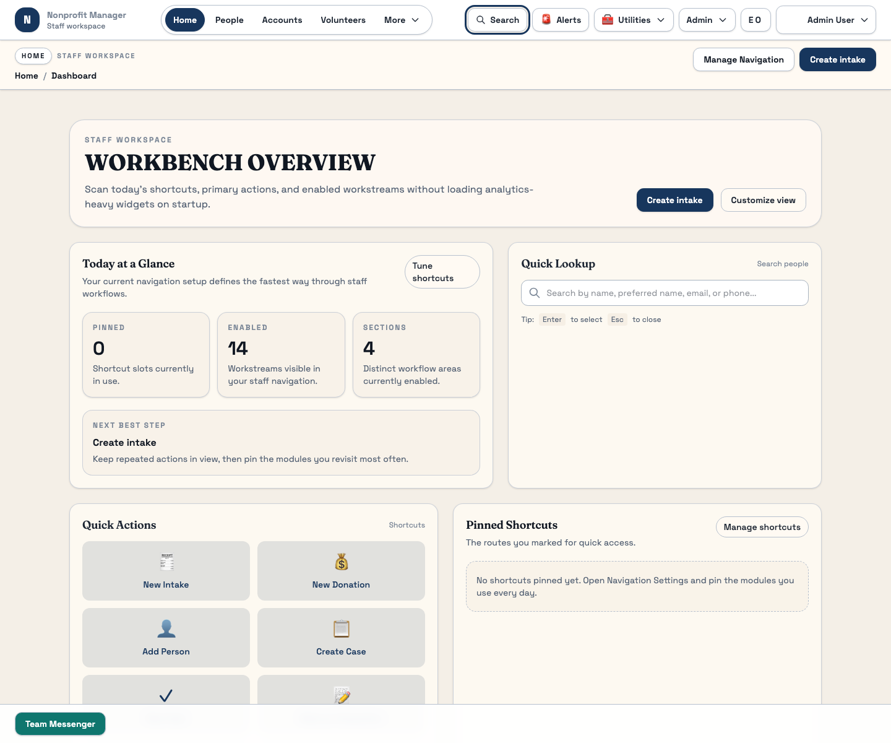

Quick Start
Learn the staff workspace in one sitting
This guide covers the core staff flow: sign in, understand the main navigation, use Workbench Overview, find a person, open an event, record a donation, and run a report.
What this page is for
Use this guide on a first day, during staff training, or any time you need to rebuild confidence in the main workspace. It focuses on the parts of the product staff touch most often and avoids unstable or still-changing areas.
Before you start
- Make sure you are signing in to the staff workspace, not the portal.
- Confirm you have permission to view People, Events, Donations, and Reports.
- Use a desktop browser for your first pass through the guide.
- Keep the Workspace Basics guide open for reference.
Steps
- Sign in and orient yourself. Open the staff workspace and scan the main navigation. The stable core areas are Workbench Overview, People, Events, Donations, Reports, and Scheduled Reports.
- Use Workbench Overview first. Start on Workbench Overview to review KPIs, quick actions, and urgent work before you jump into a specific record.
- Find a person. Open People, type a search term, apply role or status filters if needed, and open a detail page from the results list.
- Open an event. Go to Events, search the Event Catalog, select a row, and review the Event Detail panel before you send reminders or open the check-in desk.
- Record a donation. Open Donations, review the summary cards, and use Record Donation for staff-entered gifts.
- Run a report. Open Reports, choose an entity in Report Builder, select fields, then save or export the result.
- Know where to go next. Use module guides for repeat work and the FAQ when something does not look right.

What happens next
Once you complete this guide, you should be able to move through the stable staff workspace without guessing where common tasks live. The next step is usually to read one module guide in full, based on the work you do most often.
Common mistakes
- Staying on Workbench Overview when you need a detail page or transaction history.
- Using the wrong workspace surface, especially portal vs. staff.
- Creating a new record before searching for an existing person or account.
- Jumping into reports without picking the right entity first.
Related guides
Need help?
If one of the main navigation items is missing, the most likely cause is permissions or environment setup. Contact your admin with the missing route name and the account you used to sign in. If the page is present but not behaving as expected, collect the route, the action you took, and the time of the issue before escalating.